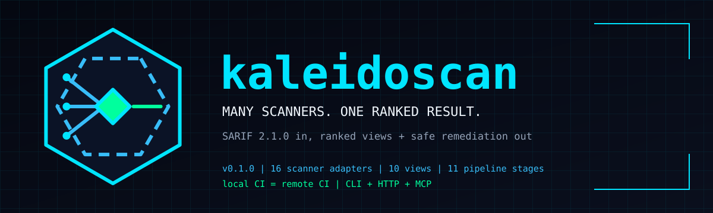
Composable security testing: run several scanners over one target, normalize everything to SARIF 2.1.0, rank by measured scanner reliability, and gate in local or remote CI. Early development: see status in the README for what is implemented.
16scanner adapters (planned)
10views
11pipeline stages
2/18commands implemented
v0.1.0version
Open the interactive pipeline visualizer (sample run) · User manual
Quickstart
uv tool install . kaleidoscan doctor kaleidoscan viz --sample --out visualizer.html
Graphics

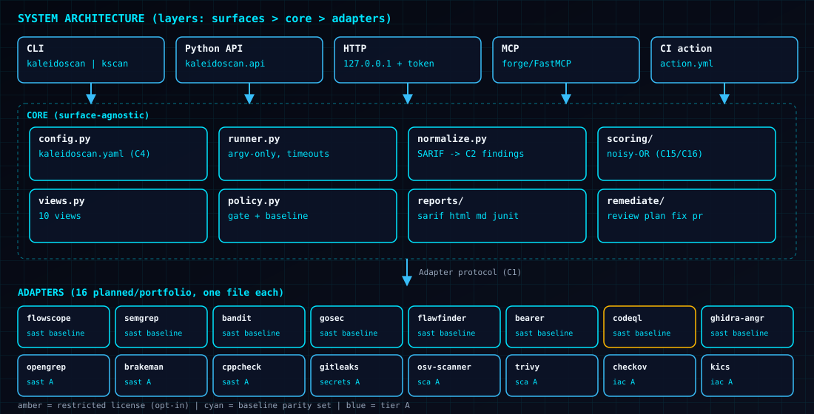

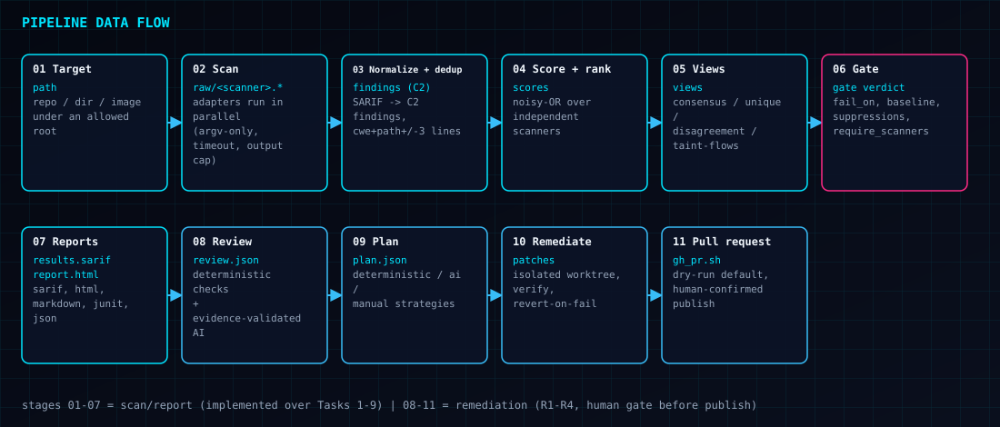

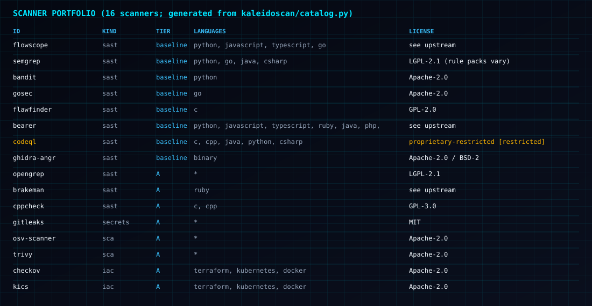

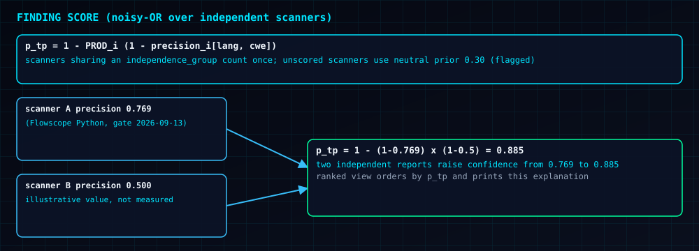

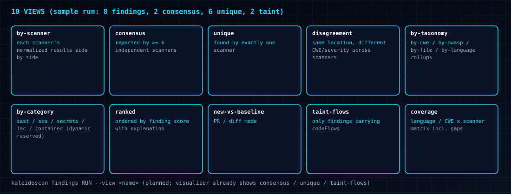

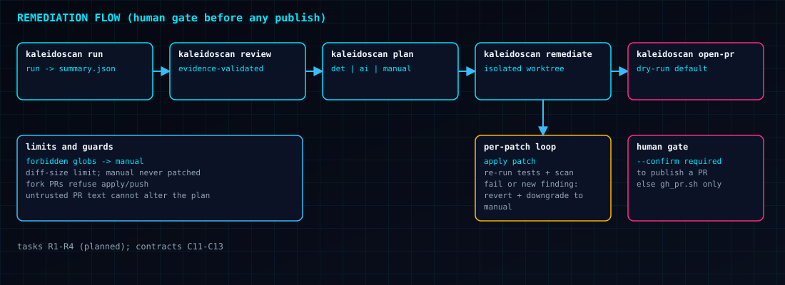

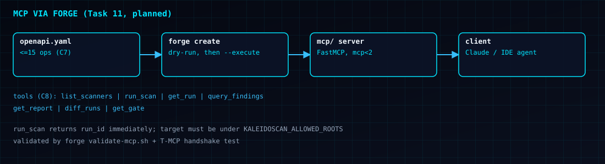

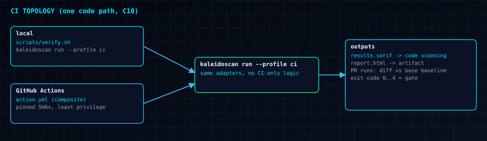

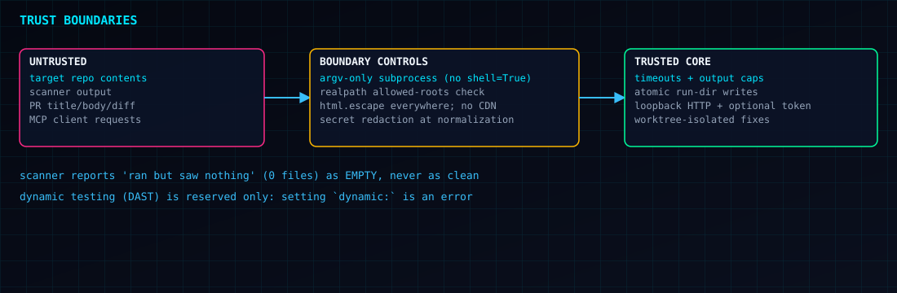

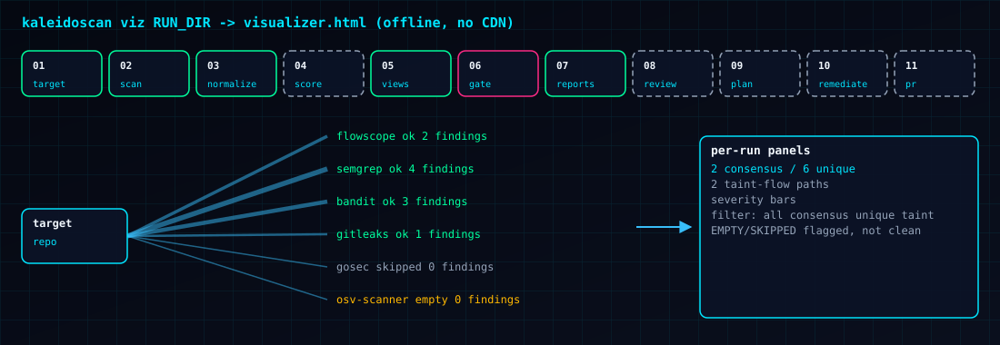
Scanner explorer
| id | kind | tier | languages | license |
|---|
Documentation
Purposeproblem, tenets, threat model
Architecturelayers, adapters, data flow
Runninginstall, CLI, exit codes
Configurationkaleidoscan.yaml reference
How-torecipes
Scannersgenerated catalog
Views and scoringnoisy-OR, ranking
Remediationreview, plan, fix, PR
HTTP, MCP, CIsurfaces
User manualguided reading
Contributingadapters, tests, docs